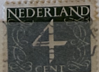
| SOURCE | TITLE| IMAGE MATCH | click to source page |
| eBay | 13 Netherlands Postage Stamps Used Nederland Nederl-Indie 1915-1971 Queens Dove | eBay | 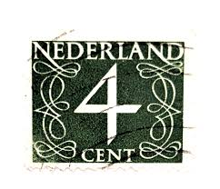 |
| vividagallery.com | Netherlands Numeral Definitive Dark Green Scroll Pattern Mail Economy Classic Jigsaw Puzzle by Vivida Gallery - Vivida Gallery | 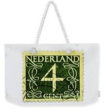 |
| vividagallery.com | Netherlands Numeral Definitive Dark Green Scroll Pattern Mail Economy Classic Fleece Blanket by Vivida Photo - Vivida Photo | 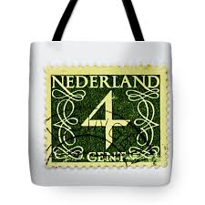 |
| Amazon.com | Amazon.com: Netherlands 471Z z A unmounted Mint/Never hinged ** MNH 1962 Clear Brands: Numbers (Stamps for Collectors) : Toys & Games | 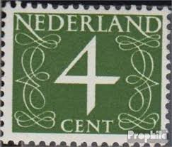 |
| sellosmundo.com | Netherlands. Netherlands Europe ref. 436 | 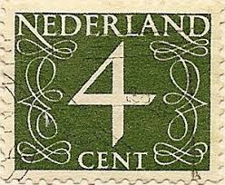 |
| Dreamstime.com | NETHERLANDS - CIRCA 1946: a Stamp Printed in the Netherlands Shows it`s Value of 4 Cent, Circa 1946. Editorial Stock Photo - Image of historic, mail: 185863838 | 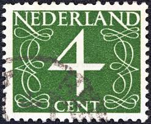 |
| vividagallery.com | Netherlands Numeral Definitive Dark Green Scroll Pattern Mail Economy Classic Portable Battery Charger by Vivida Photo - Vivida Photo | 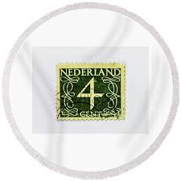 |
| Colnect | Stamp: Numeral (Netherlands(Numeral - 1946-1957 - Type 'Van Krimpen') Mi:NL 646,Sn:NL 342,Yt:NL 611A,Sg:NL 639c,AFA:NL 646,NVP:NL 466,Un:NL 460B 📮 | 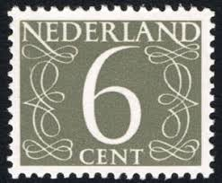 |
| eBay | Green Used Dutch & Colonies Stamps | eBay | 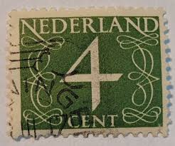 |
| PostBeeld.nl | Postzegels uit Nederland Postfris - PostBeeld.nl - Online Postzegel Winkel - Verzamelen | 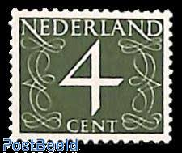 |
| Dreamstime.com | Old Green 1946 Dodge Custom D24 Four Door 7 Passenger Sedan Parked in the Street. Classic Car Show. Editorial Image - Image of holidays, custom: 257729245 | 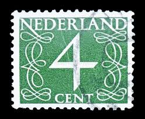 |
| 123RF | THE NETHERLANDS - CIRCA 1950: Stamp Printed In The Netherlands Shows The Number 1, Circa 1950 Stock Photo, Picture and Royalty Free Image. Image 13893908. | 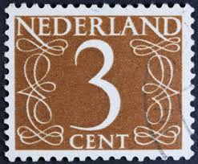 |
| Mercari | Netherlands Vintage Stamps | Mercari | 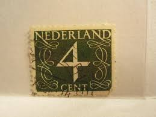 |
| AbeBooks | NETHERLAND: A NOVEL - Scarce Fine Copy of The First Hardcover Edition/First Printing: Signed by Joseph O'Neill - SIGNED ON THE TITLE PAGE by O'Neill, Joseph: Fine Hardcover (2008) 1st Edition., Signed | 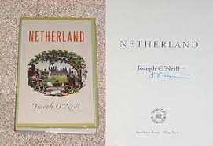 |
| allnumis.com | 5 Cents 1976 - Crouwel grey, Numerals, Figures - Netherlands - Stamp - 6265 | 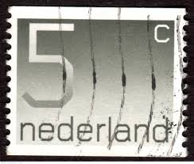 |
| Mercari | Netherlands Stamp Green 4c Used 285 Circular | Mercari | 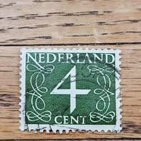 |
| Shutterstock | 312 4 Cents Stamp Royalty-Free Images, Stock Photos & Pictures | Shutterstock | 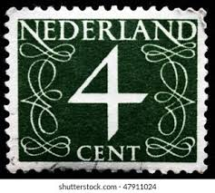 |
| Etsy | 4 Cent Stamp - Etsy Denmark | 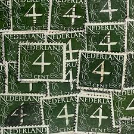 |
| Todocolección | sellos holanda, nederland, 2,1/2 cent, años, 18 - Buy Antique stamps of Netherlands on todocoleccion | 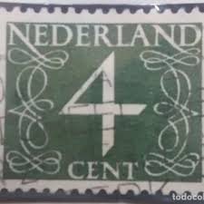 |
| vividagallery.com | Netherlands Numeral Definitive Dark Green Scroll Pattern Mail Economy Classic Shower Curtain by Vivida Photo - Vivida Photo | 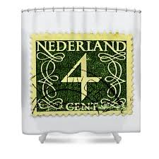 |
| Etsy | Three Amigos! "die Like Dogs" Quote Poster (12"x18" - Etsy | 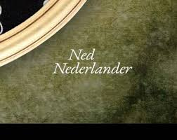 |
| Netherlands Numeral Type 1954 Stamp | 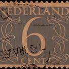 | |
| eBay | Netherlands 1946-1969 New Daily Stamp 4c (HBX) | eBay | 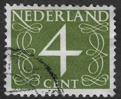 |
| Todocolección | sello holanda, nederland,5 cent, reina wilhelmi - Buy Antique stamps of Netherlands on todocoleccion | 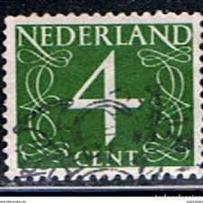 |
| Shutterstock | Netherlands Circa 1946 Stamp Printed Netherlands Foto Stok 156586976 | Shutterstock | 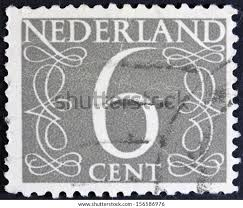 |
| sellosmundo.com | Netherlands. Netherlands Europe ref. 463 |  |
| vividagallery.com | Netherlands Numeral Definitive Dark Green Scroll Pattern Mail Economy Classic Beach Towel by Vivida Photo - Vivida Photo | 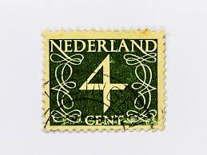 |
| Mercari | 1928 Netherlands "Semi Post" | Mercari | 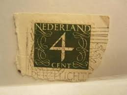 |
| Dreamstime.com | 762 Dutch Seal Stock Photos - Free & Royalty-Free Stock Photos from Dreamstime - Page 5 | 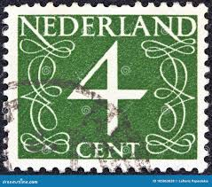 |
| WorthPoint | vintage golf painting in wood frame stamped on back voortman oranjestr amsterdam | #536093541 | 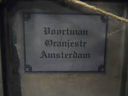 |
| eBay | WW2-Silver Netherlands Indies 1/10G 1942 Coin Stamp 1899 15C 1920 4&6 cent lot | eBay | 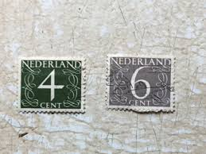 |
| Ancestry.com | Detroit High School Yearbooks and Pictures - Ancestry® | 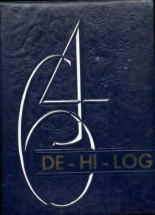 |
| eBay UK | Numeral Mint Never Hinged/MNH Dutch & Colonies Stamps for sale | eBay UK | 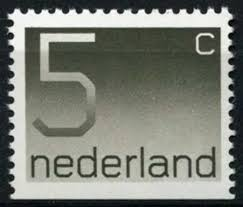 |
| eBay | Rembrandt House Amsterdam Framed Art Exhibition Poster | eBay | 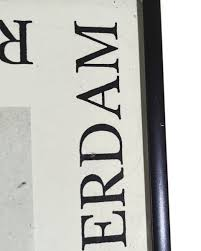 |
| Shutterstock | 3+ Hundred 4 Cent Stamp Royalty-Free Images, Stock Photos & Pictures | Shutterstock | 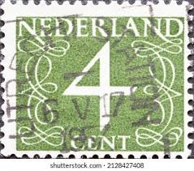 |
| Stampedia | NETHERLANDS 1946 2 cent Definitive Stamps, | |  |
| eBay | Netherlands Postage ~ Daily Stamp ~ 4¢ Green ~ Posted/Used ~ c.1946 ~ C31 | eBay | 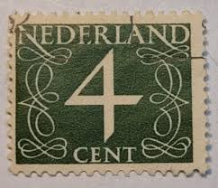 |
| eBay | NETHERLANDS 2002 SUPPLEMENT # 53 SCOTT SPECIALTY STAMP ALBUM PAGES 335S002 | eBay | 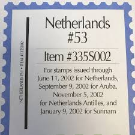 |
| New York Almanack | Janny Venema On New Netherland Praatjes Podcast - New York Almanack | 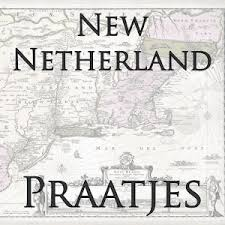 |
| Eupedia | Zwolle Travel Guide - Netherlands - Eupedia | |
| HipStamp | Netherlands 343 Used Numeral 6 1953 (BP3342) | Europe - Netherlands & Colonies, General Issue Stamp / HipStamp | 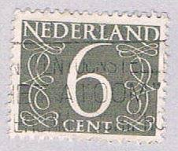 |
| eBay | Netherlands Postage ~ 2¢ Blue Stamp ~ Posted/Used ~ c.1955 ~ M73 | eBay | 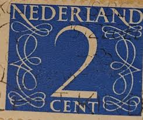 |
| WW2 Depot | German Army Waffen SS Nederland Cuff Title Bevo | 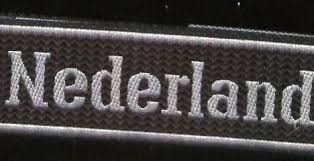 |
| PostBeeld.nl | Postzegels uit het jaar 1946 - PostBeeld.nl - Online Postzegel Winkel - Verzamelen | 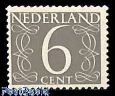 |
| smartsmile.net.br | 50 Different Special Stamps Netherlands - Personal Stamps Series Canon Of The Netherlands Prophila Stamps For Collectors | 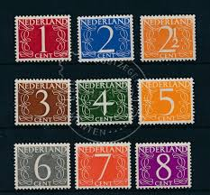 |
| HipStamp | Netherlands #539 50c Numeral | Europe - Netherlands & Colonies, General Issue Stamp / HipStamp | 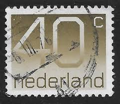 |
| eBay | Vintage Stéphane Magnard Watercolor Street Scene 34" Framed BD761 | eBay | 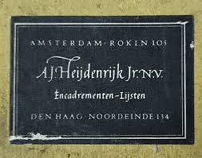 |
| Shutterstock | Netherlands Stamp No Circa Date Stamp Stock Photo 1070252273 | Shutterstock | 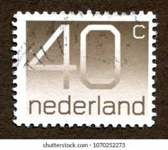 |
| mrussem.com | Wim Crouwel - M. Russem Book Design | 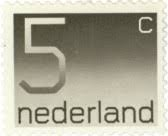 |
| eBay | NETHERLANDS 1962 #406 MH -S2486-1 | eBay | 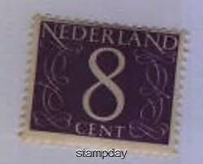 |
| Etsy | 1932 Netherland Dairy Children's Book. Florence Stuyvesant. Rare Promotional Farming. Syracuse NY Ephemera History - Etsy | 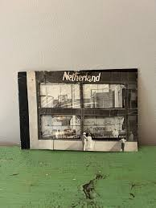 |
| iStock | Emancipation Proclamation Stamp Stock Photo - Download Image Now - USA, Postage Stamp, Emancipation Proclamation - iStock | 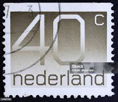 |
| Scrapbook Customs | Scrapbook Customs | Explore Netherland Sticker | |
| the-low-countries.com | d = f (a-s) | |
| kaskad.co.il | OUR SUPLIERS 2 – Kaskad | |
| hetwitbeertje.be | Gastenkamers te Brugge Het Wit Beertje bij Mr. Defour Jean-Pierre | |
| Alamy | Dutch stamp hi-res stock photography and images - Alamy | |
| YouTube | Netherlands (Holland) Aalsmeer, Delft, Edam, Rotterdam and Zaanse Schans 1993 - YouTube | |
| Netherlands (40) 1976 Numeral Stamps |